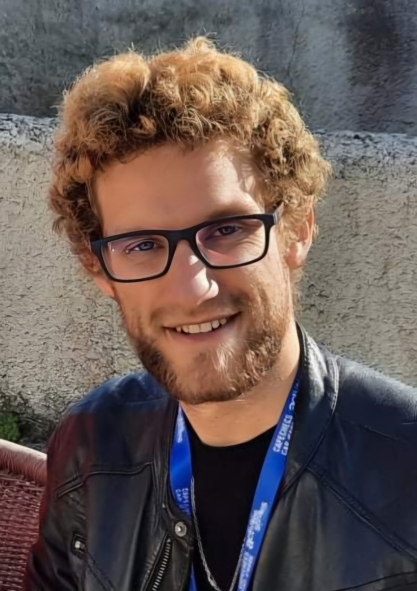

Pierre Catoire

Welcome on my web page, you can find fresh news about me here !
I am currently, a non-tenured searcher at université de Caen, in the south of France et I am teaching at the maths department. I am a searcher hosted at the Research Group in computer science, image and instrumentation of Caen.
I passed a PhD in mathematics at Université du Littoral Côte d'Opale in laboratoire de mathématiques pures et appliquées Joseph Liouville math lab.
I am also a chess player. So could have met me during one tournament !
Students may follow the link lien for documents for lessons.
If you wish to write to me to talk about mathematics or computer scinces, you can email me at: catoire_research@proton.me
Mails won't be lost here !
You can download my english CV here.
Research works
My research works are about combinatorial algebra at the intersection between mathematics and computer science
More precisely, I am working on combinatorial Hopf algebras and their applications in other fields of mathematics like number theory, differential geometry, renormalisation theory in quantum physics or free probability theory.
Usually, I am trying to do mathematics with motivations or practical applications from other fields. This produces beautiful results. But, for sure, theory is also really important !
Research interests
My research work is about combinatorial Hopf algebras, Post-Hopf algebras, tridendriform algebras, operad theory and the study of some combinatorial objects likre trees, parking functions, words or matroids...
Moreover, I also enjoy to look some specific combinatorial issues. Currently, I want to spend some time to the study of the cycle double cover conjecture .
Publications
Here is a link to my PhD thesis (in french infortunately as I did not have time to type a translation)entitled "Algebraic context for combinatorial Hopf algebras applications".
In this document, I am studying many different Hopf algebras appearing in other domains of mathematics:
- the free tridendriform algebras described by Schroeder trees;
- double bialgebra structure for matrices and matroids;
- Post-Hopf algebras appearing in differential geometry.
Until now, I am detailling the list of documents available on ArXiV with a one line description (click on the links for for more information):
Published in a peer-reviewed journal
Online
Ongoing projects
I am now working on:
-
a free tridendriform structure on the set of parking functions with Bérénice Delcroix-Oger at IMAG ;
- new generalization of some conjectures in the theory of MZVs involving trees with Pierre Clavier and Ku-Yu Fan;
- on the algebraic notions in numerical integration and in the context of differential geometry with Léopold Trémant at laboratoire de mathématiques de Lens and Abrien Busnot-Laurent at IRMAR.
- other subjects still opened in my thesis about Post-Hopf algebras and the double bialgebra structure for matroids..
Teaching
I am currently teaching at the computer science departement at Université de Caen for 192h this year.
LAst year, I taught to students at the maths department of Université de Montpellier for 192h. I have taught to second year students at Polytech school of Montpellier, second year students in computer science degree and first year student of biology to help them with maths in their biology studies.s
Two years ago, I was teaching in a computer science department for 192h/year at IUT de Lens to student in first and second year. I have made many practical works files either with the help of Léopold Trémant. If you want to get those files (in french) go to the french webpage.
During my PhD, I have taught 2 years for 64h/year two courses called:
- "Maths2:algebra": logic, naive set theory, maps, injectivity, surjectivity, bijectivity, countable sets and relations.
- "Maths6:arithmetic": euclidian division, modular arithmetic, introduction to group theory, Bezout and Gauss theorem, division euclidienne, arithmétique modulaire, une introduction à la théorie des groupes, théorème de Bézout et de Gauss, solving equations systems with moduli.
To summarize, I have mainly taught to students doing either computer science studies or maths studies in different courses like: arithmetic, basic programation, machine learning, analysis with series, arithmetic and cryptography, basic statistics and set theory, differential calculus, series theory...